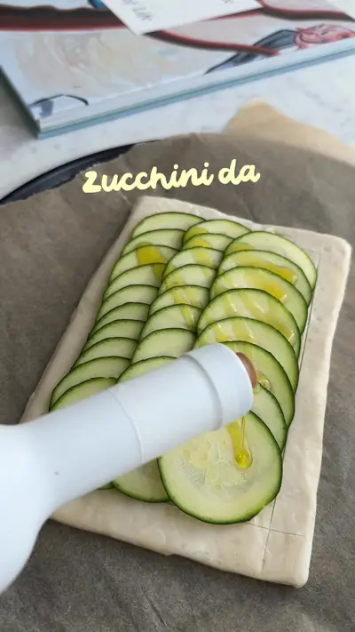

Baby-led weaning recipes, and easy toddler meal idea

Ingredients
- zucchini
- olive oil
- cheese
Steps
- First cut a zucchini into slices then add zucchini slices on a puff pastry, drizzle olive oil, add cheese and herbs of your choice, bake until it gets golden brown.
- For adults you can add more cheese and seasoning and enjoy this as a family.
From the video's narration and on-screen text, by @mini.tiger.zen on TikTok. Open original